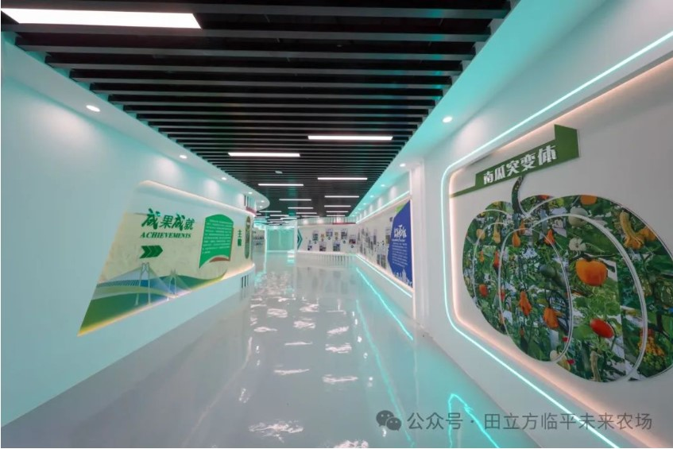

无土气雾栽培技术
雾耕植物工厂采用新型的无土气雾栽培技术，脱离了土壤对农产品的污染。气雾栽培技术将植物所需的营养液通过雾化装置喷到植物根部，与传统栽培相比，节水率达98%，节肥率可达95%以上。温室大棚设置了两道门，所有窗户安装有防虫网，棚内装有诱虫灯，最大程度杜绝虫害，避免了农药的使用。我们主要种植生菜、三色番茄、水果黄瓜、西瓜、甜瓜等蔬果。
航天育种技术
航天育种是以航天太空育种技术为核心（如微重力、强辐射等），将种子在太空物理环境的诱变下使得生物基因发生变异，种子返回地面后在进行实验研究和选育，选出品性兼优，安全健康的新品种进行推广和产业的应用。随着人类科技的进步，出现了人工诱变选育新品种，分别为物理诱变和化学诱变。主要种植太空南瓜、太空番茄、太空茄子、太空辣椒等，极具科普性、观赏性。
无人智慧农场
围绕核心区块的450亩稻田，我们规划建设了无人智慧农场，整个项目整合5G、北斗导航、智能驾驶、智能装备等现代化技术，以及田间的传感器和气候站的数据，实时监控田间土壤墒情，水位，气候等物理，同时全覆盖监控也为我们监控田间的病虫害提供指导，我们根据当前田间作物所处的成熟阶段以及不同的物候期，进行水位控制、肥力补给，病虫害预防，并且为种田大户提供相应的建议。实现水稻耕、种、管、收生产全过程的无人化建设，对传统农业进行赋能，减少人员投入，实施规模化、标准化生产，全面提升劳动生产率。生产管理人员在生产运营指挥中心即可对整个区域的农事生产进行更加便捷的一站式管理决策和指导。
烘干中心
是结合现代农业发展趋势，精心规划建设的现代化农产品处理中心。我们的烘干流程设计科学、高效，主要建设5台16.5吨共计82.5吨量自动烘干流水线及周边配套设施，采用三久低温干燥机、生物质颗粒炉、脉冲除尘等设备，日烘干能力达到100吨。它集成了最先进的烘干技术、自动化控制系统以及环保节能理念，致力于为农场内及周边地区的农户提供高效、优质的农产品烘干服务。通过精准控制温度、湿度和风速等关键参数，我们确保每一种农产品都能在最适宜的环境下完成烘干，保持其最佳的营养价值与口感。同时，全自动化的进出料系统大幅提升了工作效率，减轻了人工劳动强度。
现代育秧中心
育秧中心主要分为四个部分，分别是秧盘区、浸种区、托盘区以及基质区。我们面前所看到的是育秧的机器，码盘机、供盘机、叠盘机、集中供料提升机、余料回收机和种子提升机。码盘机单次取盘5张，单个托盘码垛120张秧盘，供盘机单次可叠放16张秧盘，叠盘机单次最大可堆叠10盘，集中供料提升机集中供土，提供1立方存储空间，余料回收机可将装土扫落的基质土提升到装土料仓，种子提升机可提供100L存储空间。我们的水稻的种植采用机械插秧，一小时可以播种800-1000盘，相当于35-40亩稻田的播种量。机械插秧速度快、深浅度适宜，分裂率和成活率高，水稻后期的产量多。通过科学管理与技术创新，我们致力于培育出优质、高产、抗病性强的秧苗，为农场的丰收奠定坚实基础。田立方育秧中心的建设改善了传统育苗技术面临的诸多问题，例如育苗苗龄长、质量差、大小不齐、冻害和病虫害等问题，做到集中育苗管理，保证育苗定植后不缓苗、植株生长整齐，所用基质营养配方合理，培育的苗壮、根系发达、生长快。之后我们也将继续坚持科技引领、创新驱动的发展理念持续扩大育秧中心规模，引进更多先进的育秧技术和设备。